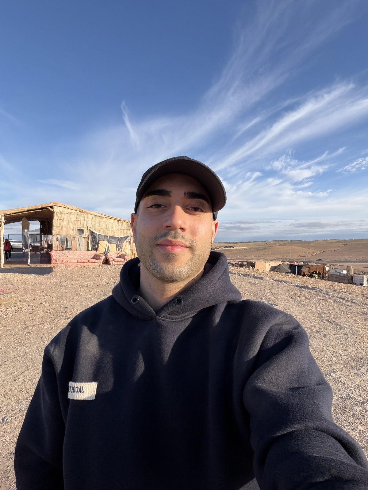
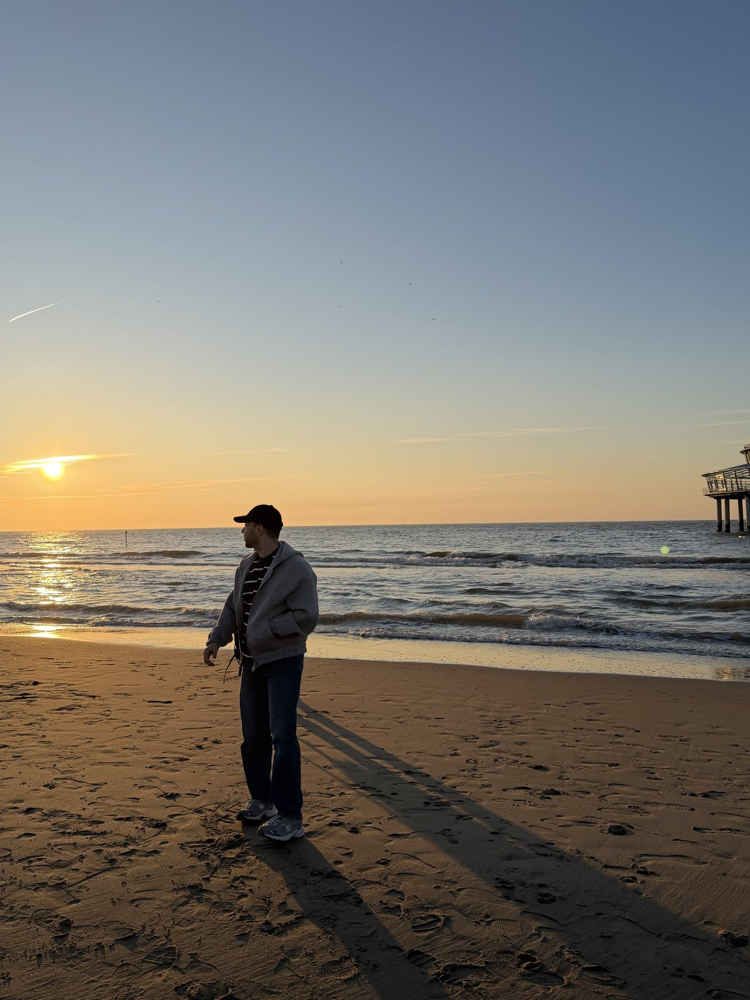

Twaalf weken. Zes sessies. Eén duurzaam systeem voor meer balans, energie en richting. Voor werkende mensen die merken dat hun huidige manier van leven niet meer werkt.

Werk neemt al je energie in beslag, persoonlijke doelen schuiven naar achteren, en je voelt dat de dagen op elkaar gaan lijken. Je doet veel, maar niet het juiste.
Mails om 22u, weekendwerk dat niet stopt, en tegen vrijdag is er niets meer over. Er móét iets veranderen aan hoe je werk en privé verweven zijn, maar je weet niet waar te beginnen.
Die sportroutine, dat project, tijd voor de mensen die je liefhebt. Goede voornemens verdwijnen in de ruis. Niet omdat je niet wilt, maar omdat je systeem het niet ondersteunt.
De BABL Methode is geen standaard coachingprogramma. Het is een gestructureerd pad van twaalf weken waarin je stap voor stap een nieuw systeem bouwt, met balans, energie en richting als fundament. Geen tijdelijke motivatie. Een kader dat blijft werken, ook op dagen dat je het even kwijt bent.
Bekijk het volledige trajectElke beweging heeft een helder doel en wordt gedragen door twee sessies. Samen vormen ze één logische boog: van eerlijk kijken, naar nieuw ontwerpen, naar verankeren.
Je kijkt eerlijk naar hoe je leven er vandaag écht uitziet: in werk, relaties, gezondheid, energie en tijd. En je kiest een nieuwe richting vanuit je eigen waarden.
Je ontwerpt de principes van je nieuwe leven: non-negotiables, grenzen, wat uit je leven verdwijnt. Daarna zet je die blueprint in je agenda en ga je er voor het eerst echt in leven.
Je automatiseert wat werkt, verankert je nieuwe identiteit en bouwt een plan voor de zes maanden na het traject, inclusief wat je doet als je terugvalt.
Aan het einde van twaalf weken heb je geen tijdelijke motivatie, maar een concreet persoonlijk kader dat houvast biedt in je dagelijkse leven.
Van 60 tot 90 minuten, individueel begeleid.
Drie vaste vragen via WhatsApp of e-mail, tussen sessies door.
Alle oefeningen, reflecties en templates in één document.
Jouw kader op één A4, bruikbaar voor zes maanden na het traject.
Zodat sessie 1 meteen de diepte in kan, zonder opwarming.
Concreet protocol voor als het moeilijk wordt. Want dat komt.

Ik werk al vier jaar als HR consultant. Ik help mensen de juiste job te vinden en ondersteun bedrijven in het welzijn van hun medewerkers. Daarin merk ik elke dag waar mijn echte energie ligt: mensen zien groeien.
Ik verdiepte me in coaching en persoonlijke ontwikkeling, behaalde mijn Accredited Life Coach certificaat, en bouwde de BABL Methode uit de patronen die ik keer op keer zie bij de mensen die ik begeleid.
Wat ik wél doe: bouwen aan systemen die blijven werken. Niet morgen. Over zes maanden.
We plannen een gratis kennismakingsgesprek van dertig minuten. Daarin bekijken we samen waar je vandaag staat, wat je zoekt, en of dit traject de juiste volgende stap voor je is.
Boek nu je kennismakingsgesprek in Geen verkooppraatjes. Gewoon een gesprek.